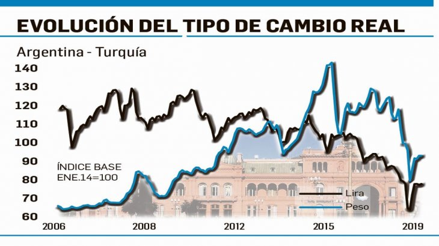

Real Chubut - Agencia de Noticias


La lira turca y el peso están en niveles razonables, según IIF

EL INSTITUTE OF INTERNATIONAL FINANCE CONSIDERA QUE NINGUNA DE LAS DOS DIVISAS ESTÁ BARATA - En 2018 se advertía el inevitable ajuste externo en ambos países. Y así sufrieron tanto la lira como el peso. El ajuste externo está en cabeza, principalmente, de las importaciones. Los pronósticos 2019.
Pasó un año desde que los expertos del Institute of International Finance (IIF) advirtieron que los elevados déficits de cuenta corriente de Argentina y de Turquía debían corregirse irremediablemente vía el tipo de cambio. En ese tiempo la entidad afirmaba que sus modelos de valoración marcaban una sobrevaluación sustancial para ambas divisas. Hoy, en cambio, tras el ajuste del sector externo iniciado el año pasado el influyente IIF considera que tanto el peso como la lira "han convergido a casi el valor justo", o sea, los valores de la moneda argentina y de la turca son razonables. Sin duda, es una lectura a tener en cuenta sobre todo en momentos en que varios analistas locales ponen el acento en la fuerte apreciación del peso en los últimos meses.
Pero si bien el IIF destaca que el peso y la lira han sufrido una significativa depreciación desde entonces, y los excesivos déficits de la cuenta corriente se están corrigiendo rápidamente, sus modelos dicen -además que ambas monedas convergieron cerca del valor justo- que ninguna de las dos monedas está barata, ya que el ajuste de la cuenta corriente es en su mayoría cíclico, porque el verdadero ajuste "estructural" aún no se ha logrado.
Veamos a continuación lo más interesante del análisis del equipo del IIF integrado por Robin Brooks (director y economista jefe), Martín Castellano (economista jefe Latam) y Ugras Ulku (economista jefe Europa del Este y Turquía), en momentos en que los flujos de capitales están retornando a los emergentes.
Hace un año el modelo de valoración (EM FX) del IIF, que mapea los desequilibrios de la cuenta corriente, señaló que era necesario el ajuste del tipo de cambio real en ambos países. En ese momento, los grandes y crecientes déficits de cuenta corriente en Argentina y Turquía se convirtieron en sobrevaloraciones sustanciales para ambas monedas, de alrededor del 15% (y ambas monedas cayeron drásticamente durante 2018). Vale señalar que el anticipo de dicha situación se transformó en una guía clave en medio de un año turbulento, y permitió en setiembre, en medio del máximo de las ventas masivas en mercados emergentes, mejorar el panorama.
En el caso de Argentina y Turquía, el desequilibrio externo se está ajustando aceleradamente, pero tanto el peso como la lira, que cayeron fuerte en 2018, están en valores considerados justos pero no subvaloradas. "Esto se debe a que gran parte del ajuste de la cuenta corriente es cíclico, debido a la caída del PIB y a la compresión de las importaciones, y no a una verdadera mejora de las exportaciones. Eso llevará tiempo, especialmente en Argentina, que está la mitad de abierta al comercio que Turquía".
El peso argentino y la lira turca cayeron fuertemente el año pasado, pero las historias subyacentes son fundamentalmente diferentes. "Argentina está más cerca del clásico modelo de mercado emergente, donde una combinación de políticas insostenibles (monetaria contractiva y fiscal laxa) hizo que el tipo de cambio real se apreciara significativamente y el déficit de la cuenta corriente se ampliara. La devaluación del año pasado fue un retroceso de ese desequilibrio". En contraste, "la lira turca se ha depreciado durante muchos años y es la moneda más débil en todo el espectro emergente. El motor de la crisis de Turquía, en cambio, fue un gran auge del crédito, que amplió el déficit de la cuenta corriente a niveles insostenibles".
Cabe entonces preguntarse si ambas monedas son ahora baratas (depreciadas), dado que han caído tanto y las cuentas corrientes se están ajustando, en tal sentido los modelos de valoración del IIF dicen que no. "La intuición subyacente para esto es que el marco de referencia descuenta las fuerzas cíclicas, que están impulsando gran parte de los cambios de la cuenta corriente en esta etapa". El IIF estima que "el tipo de grandes y persistentes devaluaciones que Turquía y Argentina vieron el año pasado vienen con contracciones en el nivel de actividad del 10% (de pico a valle), lo que significa que la compresión de las importaciones, en oposición a exportaciones más fuertes, es el principal impulsor del ajuste. Este parece ser el caso en Turquía y Argentina".
A la hora de desenredar las diversas fuerzas que impulsan el ajuste de la cuenta corriente, el IIF explica que pone el acento en: los efectos retrasados de la devaluación aún pendiente; la ampliación de las brechas de producción, donde, dada una considerable incertidumbre, se asume un rango de -1% a -6% para Turquía y Argentina en 2019; y las brechas de producción extranjera ponderadas en función del comercio basadas en la base de datos de IIF.
De modo que al incorporar los efectos de la devaluación retrasada y el cierre de las brechas de producción nacionales y extranjeras, el IIF calcula un saldo de cuenta corriente subyacente, que está cerca del -1% del PIB tanto para Turquía como para la Argentina. "Esto está cerca del esquema de ahorro-inversión para ambos países, es decir, que el nivel de cuenta corriente es coherente con los fundamentos, lo que significa que ambas monedas se encuentran ahora esencialmente a un valor razonable, no subvaloradas".
Fuente: Ambito